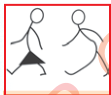

Kazi ya kufanya namba 14
(a) Fanya mazoezi ya kukaba mtu kwa kumzuia kupokea au kupasi mpira.
(b) Shirikiana na wenzio kufanya mazoezi ya kukaba eneo kwa kuzuia njia ya wapinzani.

(a) Fanya mazoezi ya kukaba mtu kwa kumzuia kupokea au kupasi mpira.
(b) Shirikiana na wenzio kufanya mazoezi ya kukaba eneo kwa kuzuia njia ya wapinzani.